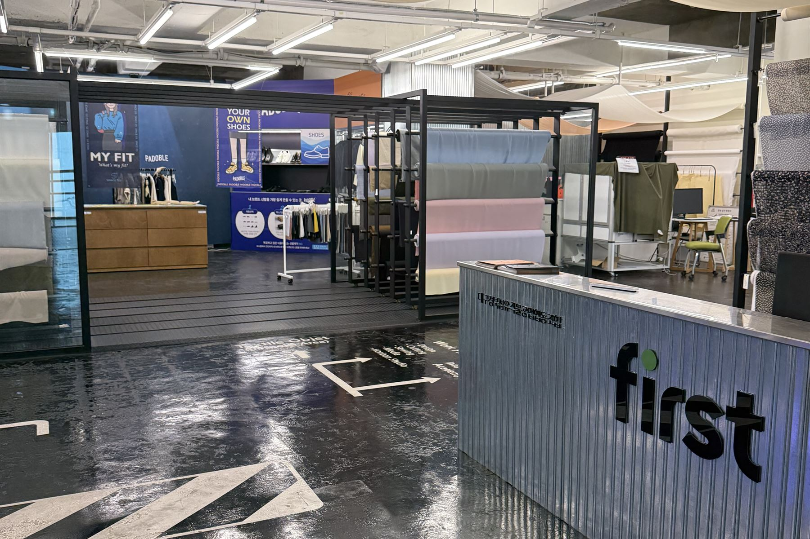
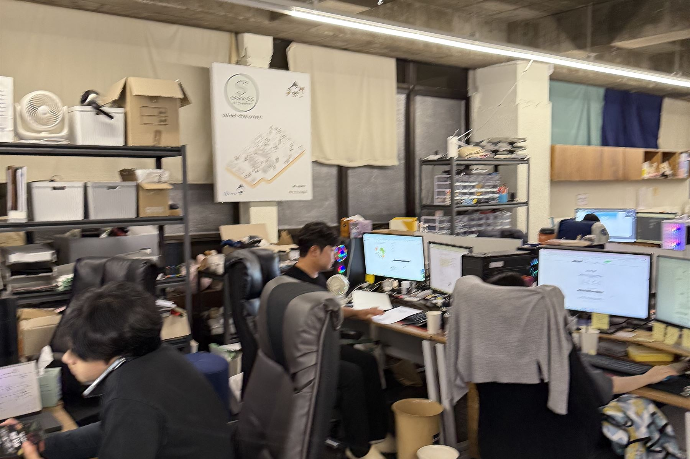
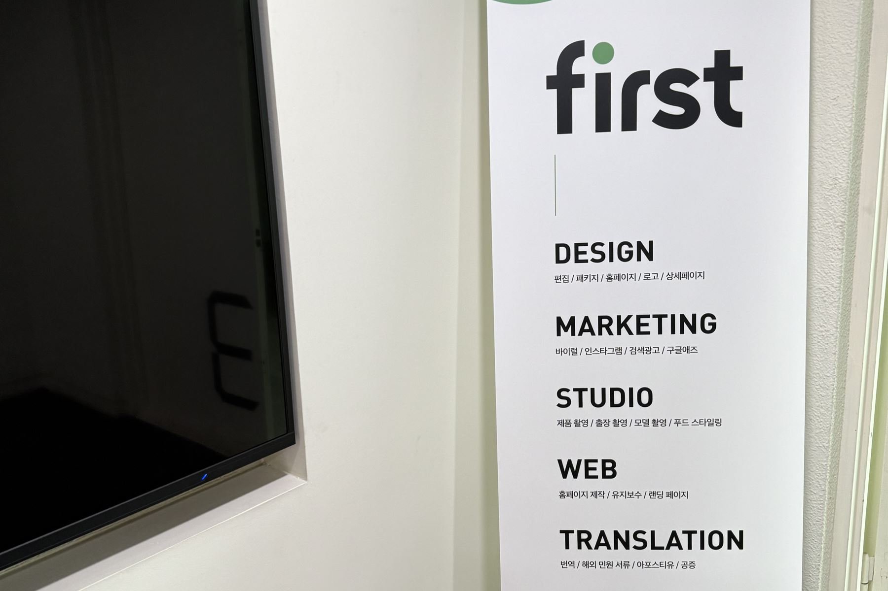
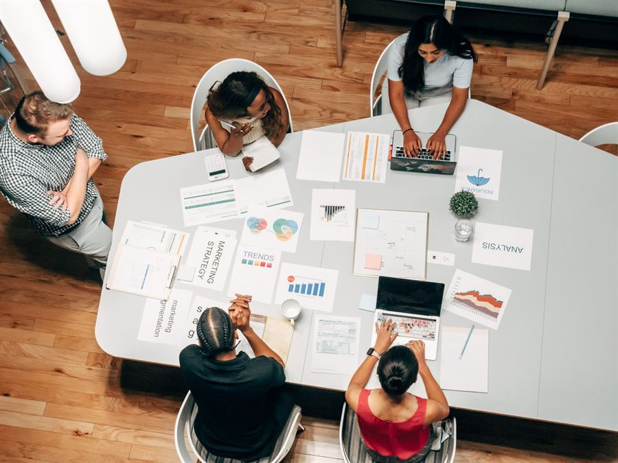
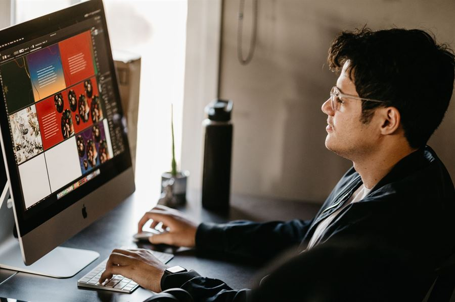
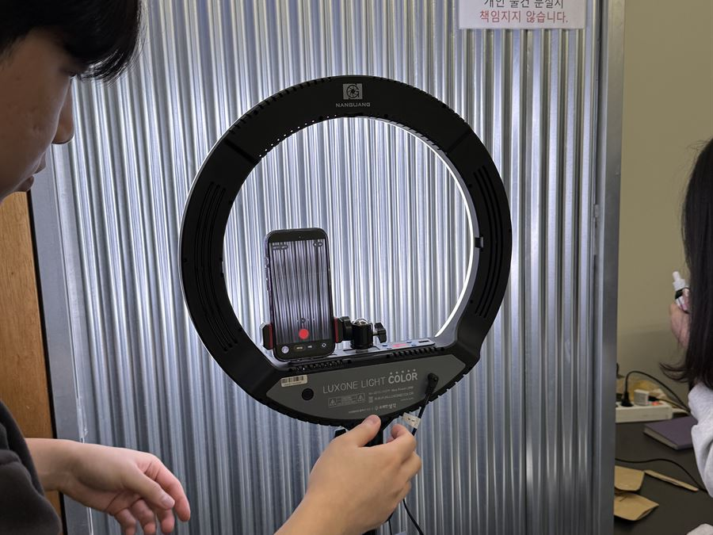
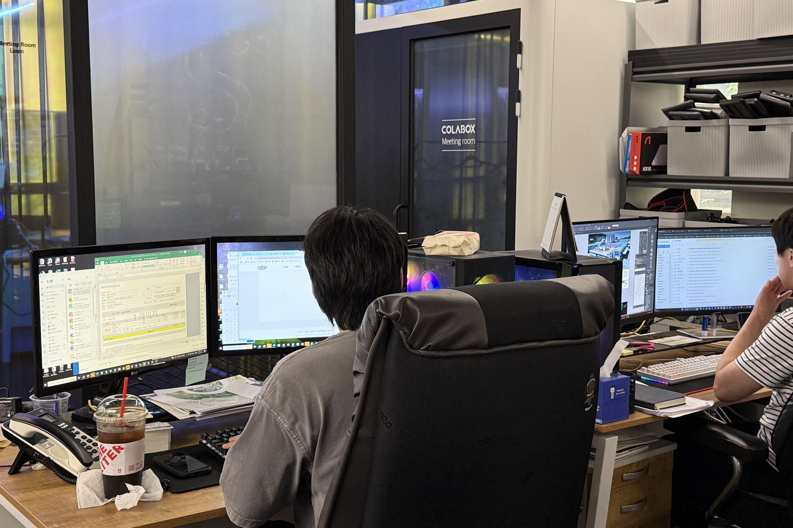
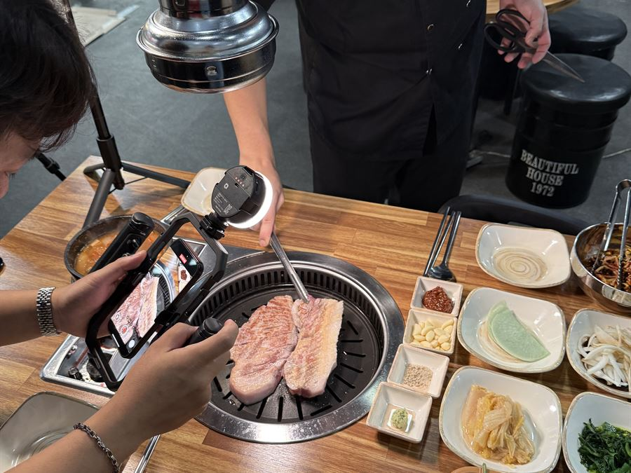
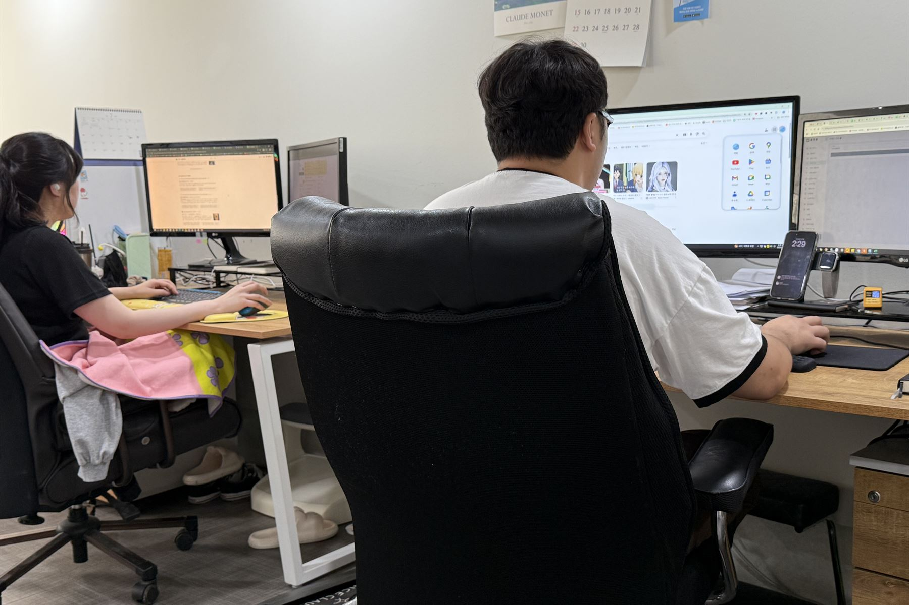
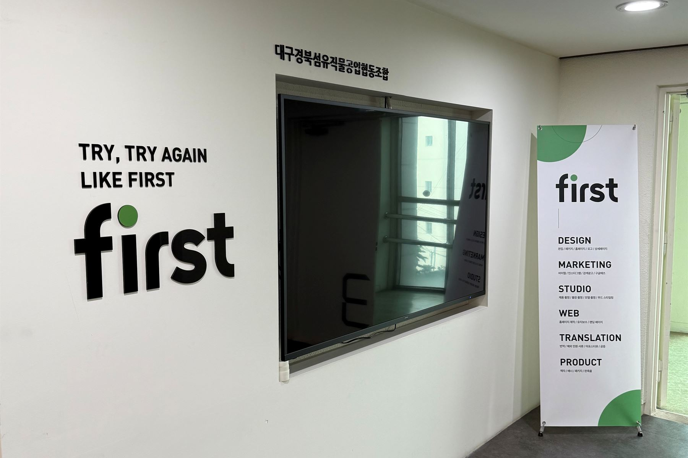

B2B 기술기업인데 검색으로 문의를 받고 싶을 때
제품 원리 · 적용 사례를 다룬 블로그 원고와 도해 이미지로 담당자가 검색하는 키워드에 노출시킵니다.
대전 · 세종 · 충청권 방문 미팅평일 09:00 ~ 18:00
MARKETING
만든 자료가 검색에서 찾히고 문의로 이어지게 합니다.
블로그·인스타그램·검색광고·언론홍보를 디자인·촬영팀과 한 팀으로 운영합니다.

왜 그럴까요?
맡기기 전에 이 4가지를 꼭 확인하세요

그 이유는,
기획하는 곳, 소재 만드는 곳, 광고 돌리는 곳이 전부 다르기 때문입니다.
소재가 외주로 나갈 때마다 톤이 어긋나고,
성과가 안 나오면 서로를 가리킵니다.

보고서 숫자와 실제 문의 전화가 너무 달라 당황하신 적 있으신가요?
소재를 직접 만들지 않는 대행사에 맡길 때 겪는 문제입니다.
이제, 기획과 소재 제작과 채널 운영을 한 번에 맡겨문의로 이어지는 마케팅을 하세요.

Marketing채널을 운영하는
Design카드뉴스 · 소재를
Studio사진 · 숏폼을 찍는채널을 운영하는 퍼포먼스 마케터와 카드뉴스 · 사진 · 영상을 직접 만드는 디자인 · 촬영팀이 함께 붙는 통합 운영 조직입니다.

대전지사의 방식
마케팅 대행의 품질은 결국 소재에서 갈립니다.
매월 발행한 포스팅 주소, 키워드별 노출 순위, 유입과 문의 수를 정리한 결과보고서를 드립니다.
90-Day Roadmap
첫 달은 채널 세팅과 키워드 확보, 둘째 달부터 노출이 쌓입니다. 매월 결과보고서로 다음 달 전략을 함께 정합니다.
채널이 만드는 흐름
채널 개설 · 업종 키워드 조사 · 소재 톤 정리
키워드 원고 · 카드뉴스 · 릴스 제작과 발행
검색광고 · 메타 광고 A/B 테스트 · 보도자료 송출
노출 순위 · 유입 · 문의 수 결과보고, 다음 분기 전략
이런 경우
제품 원리 · 적용 사례를 다룬 블로그 원고와 도해 이미지로 담당자가 검색하는 키워드에 노출시킵니다.
대전 지역 키워드는 수도권보다 경쟁이 낮아 정확한 키워드 선정만으로도 노출이 빨리 나타납니다. 인스타그램 · 지역 광고를 함께 운영합니다.
기술 내용을 기자가 쓰기 쉬운 보도자료로 정리하고 포털 뉴스에 노출시킵니다.
제작 항목
필요한 채널만 골라 의뢰하셔도 좋습니다.
MARKETING
기업·병원·학원의 공식 블로그를 키워드 원고와 디자인 이미지로 운영합니다.
대전 지역 키워드를 분석해 검색 노출을 만듭니다.

MARKETING
브랜드 톤을 담은 피드와 릴스로 인스타그램을 운영합니다.
대전 매장·브랜드의 방문과 문의를 만듭니다.

MARKETING
네이버·구글 검색광고와 메타 광고를 대전·충청권 타깃으로 운영합니다.
예산 낭비 없이 문의 단가를 낮춥니다.

MARKETING
연구 성과, 신제품 출시, 수상 소식을 포털 뉴스에 노출합니다.
기술 내용을 기자가 쓰기 쉬운 보도자료로 정리합니다.
MARKETING
제품 시연, 연구 현장, 매장 소개를 릴스·쇼츠로 만듭니다.
기획·촬영·편집을 한 팀이 진행합니다.
| 구분 | 기본 제작 사양 |
|---|---|
| 채널 | 브랜드 블로그 · 인스타그램 · 검색광고 · 메타 광고 · 언론홍보 · 숏폼 |
| 기본 구성 | 블로그 키워드 원고 월 10건 / 인스타그램 피드 월 10건 |
| 소재 제작 | 자체 디자인 · 촬영 · 번역팀이 카드뉴스 · 사진 · 영상 직접 제작 |
| 보고 | 매월 포스팅 주소 · 키워드별 노출 순위 · 유입 · 문의 수 결과보고서 |
| 계약 단위 | 3개월부터 (첫 달 세팅 · 둘째 달부터 노출 누적) |
| 지역 | 전국 가능, 대전 · 세종 · 청주는 촬영 · 대면 미팅 밀착 운영 |
상담 시 목적 · 수량 · 일정에 맞춰 조정합니다.
진행 순서
업종·목표와 현재 채널
운영 상황을 확인합니다.
필요한 채널과 범위를 정하고
견적과 일정을 안내합니다.
대전 지역 키워드와 타깃을
분석해 콘텐츠 방향을 잡습니다.
전담팀이 소재를 만들고
발행·운영합니다.
노출·유입·문의 수를 정리해
다음 전략과 함께 전달합니다.
About us
퍼스트디자인 전체 실적 기준입니다. 대전지사는 같은 기획 · 인쇄 기준으로 충청권 기관과 기업을 맡습니다.
오랜 시간 쌓아온
현장 실무 경험
수많은 기업 · 기관이
퍼스트와 함께합니다
다양한 실무 경험으로
믿고 맡기십시오
“내 일처럼” — 그게 우리가 일하는 방식입니다.
정부 지원사업 안내물, 정부대전청사 · 세종 공공기관 홍보물, 지자체 캠페인까지 제출 규격과 검수 절차를 아는 상태로 진행합니다.
대덕연구단지 정부출연연구기관과 대학 연구센터의 연구성과집 · 학회 자료는 발간 규정과 표기 원칙을 정리한 뒤 시작합니다.
대기업 계열사와 공기업, 대덕테크노밸리의 바이오 · 기술기업 인쇄물을 다수 제작했습니다. 브랜드 가이드라인을 지키면서 결과물을 만듭니다.
번역 부서를 직접 운영해 영문 · 중문 · 베트남어 인쇄물을 번역부터 조판까지 한 번에 처리합니다.
자주 묻는 질문
대전에서 마케팅을 의뢰하실 때 가장 많이 받는 질문입니다.
네. 퍼스트디자인은 마케팅 전담 조직과 한 회사로 움직입니다. 원고·카드뉴스·영상 소재를 자체 디자인·촬영팀이 만들기 때문에 외주로 돌리는 대행사보다 품질과 속도에서 유리합니다.
네. B2B 기술기업은 검색으로 업체를 찾는 담당자가 많아 제품 원리·적용 사례를 다룬 블로그 글이 문의로 이어집니다. 전문 내용을 쉽게 푸는 원고와 도해 이미지가 핵심입니다.
특정 키워드 1위를 무조건 보장하는 방식은 오히려 위험합니다. 경쟁도와 연관도를 보고 노출 가능한 키워드를 여러 개 확보하는 방식으로 실제 유입을 만듭니다.
매월 결과보고서로 포스팅 주소, 키워드별 노출 순위, 유입·문의 수를 정리해 드리고 다음 달 전략을 함께 제안합니다.
블로그·인스타그램 운영은 3개월 단위로 시작합니다. 첫 달은 채널 세팅과 키워드 확보, 둘째 달부터 노출이 쌓이는 구조라 3개월은 지켜보셔야 성과를 판단할 수 있습니다.
네. 온라인 마케팅은 전국 어디든 진행됩니다. 다만 대전·세종·청주 등 충청권은 촬영과 대면 미팅 일정을 잡기 쉬워 더 밀착해서 운영해 드릴 수 있습니다.
FIRST DESIGN DAEJEON
기획 · 디자인 · 번역 · 촬영 · 인쇄를 한 팀이 진행합니다.
원고가 정리되기 전이라도 목차와 일정부터 함께 잡아 드립니다.